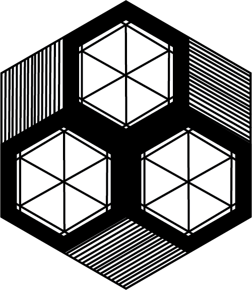
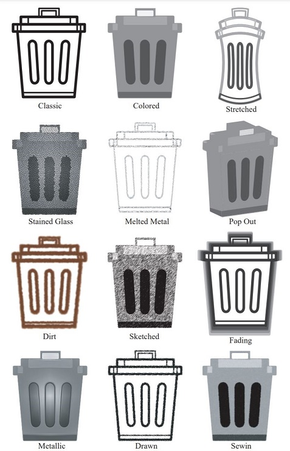
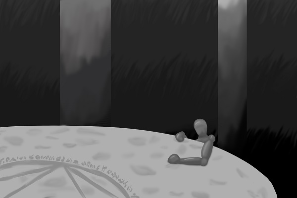

Dallas Van Houwelingen's Portfolio
Summarys
Illustrator Design Practice
I was given the opportunity to practice with alturnating an image too fit different styles. I had to study different styles and waysthose are met in order to change my trash can around the way I did.
Lost
This is an image study I did to drag the eye towards one position versus the rest of the image. I used rule of thirds to drag the eye towards my object and gave it a contouring texture to really help it stand out.
Character Commission
This is a Dungeons and Dragons character I got comissioned to do for a friend. The did not want it colored but really just needed help bringing their ideas to life by telling me how they imagine they looked.